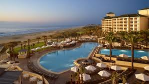
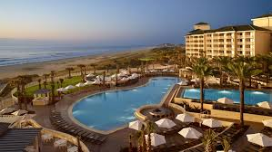

Travelling means transporting one's self. But travelling to work and travelling for vacation purposes are not the same .while travelling to work is directed to giving labour, travelling for vacation involves a different purpose. Travelling for vacation is a Leisure trip. A trip of such kind cannot be taken out all of a sudden. It needs proper planning as it involves not just transportation but staying (lodging), timely arrangements of meals, and the most importantly should serve the purpose of sightseeing. So, here, we are talking about travelling in relation to Vacation. While deciding on a vacation it’s nearly impossible for us to do all the arrangements on our own, as we may not have the proper knowledge about "what is available where”. This is when, to make things easy, we approach a travel agent to do all the arrangements. Here, is where we get to know all the possible locations we could get to see, the staying arrangements, meals, and above all, the total expenditure involved in the travel for vacation. And all this, much in advance. Isn’t it a wonderful thing to approach a travel agent then?
Ads related to travel: Travel Ads (Agent) Travel related ads are placed by Travel agents or travel agencies. These ads mention the travel agency's name, address and phone number. They have a proper and detailed outlay regarding all the places for vacationing and holidaying. We only have to make the choice as per our budget, and the rest is all arranged. Travel Ads (Transportation) Travel ad is also given by transportation companies having a fleet of busses, cars and other vehicles .Many who plan self holidays/Vacations use this service , as they have only their Transportation(travel) needs to be taken care of. Travel Ads (Hotels) Since a hotel provides the accommodation while on a vacation, it is the most important consideration among all the other. A hotel is a place that provides a lodging facility to tourist or people travelling for business purposes. One can choose from a 3 star, 4 stars, and 5 star hotel or may be just even a room. Travel Ads (Restaurant & Eateries) While on a vacation, not all hotels may have a Restaurant or an Eatery as a facility. However it is for sure that there would be a Restaurant or an Eatery close to the Hotel for the travellers. Such types of co-ordinated arrangements are common at some holiday/vacation places, especially at Hillstations.
| Company | Contact | Country |
|---|---|---|
| Wopon.com | Maria | Germany |
| Hemib.com | Christina | Sweden |
| Centro.com | Francisco Chang | Mexico |
| Maketrip.com | Priyank | India |
| Island Trading | Helen Bennett | UK |
| Königlich Essen | Philip Cramer | Germany |
| Bacchus Winecellars.com | Yoshi Tannamuri | Canada |
| Magazzini.com | Giovanni Rovelli | Italy |
| North/South | Simon Crowther | UK |
| Paris spécialités | Marie Bertrand | France |